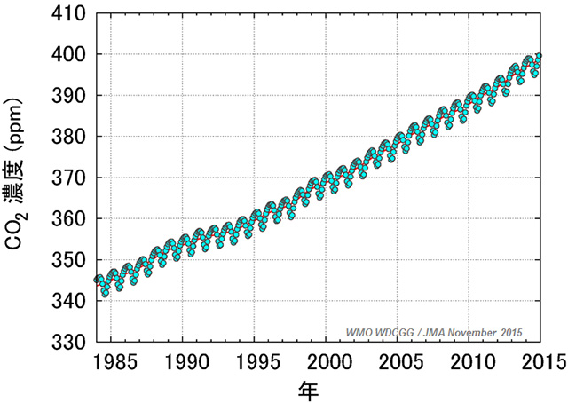
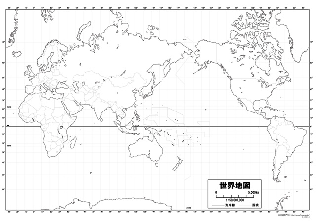

植物あってこその我々
ちょうど１年前の科学ニュースで、「古い大木の方が、若い木よりも二酸化炭素を多く吸収する」というものがありました。
どうやらこのことはそれまでの定説（若い樹木の方が二酸化炭素をよく吸収する）をひっくり返す研究発表だったようです。
で、2016年年明けには、またそれが定説に戻るような研究成果が発表されました。伐採された農業や牧畜のために伐採された熱帯雨林の再生状況からそれがわかったらしいのです。
でもって、私が言いたいのは、「生物の世界というのは、まったくもってわからないことが多い」ということ。
思い返せば、例の小保方さんが最初の論文を投稿した際に、「過去何百年の細胞生物学の歴史を愚弄している」と審査員から批判を受けていました。
そう、実は「細胞レベルで研究されてきた生物の歴史は、たった350年しかない」という状況があり、まだまだ未解明の部分が山積みなんです。
しかし生物──とりわけ植物の営みというのは、生物全体の基盤として、とても重要な意味を持っていることは断言してよいでしょう。
なぜなら自然界において植物は、全ての動植物が活動するために必要なエネルギーを生み出す『生産者』という位置づけにいるからです。
全て生物由来のものです。
直接植物を食べている場合もありますが、動物を食べている場合でも、その動物が食べているものをたどっていくと、必ず最後には植物にいきつきますよね。
つまり、有機物という生物界唯一のエネルギーをつくり出す工場の役割を担っているのが植物だということです。
俯瞰的に見ると…
先ほど述べた植物の‘生産者’としての立場でおこなっている行為がまさに「光合成」。。
有機物（デンプンやタンパク質、脂肪）は光合成から作られるもので、有機物の材料として必ず必要になるモノが炭素・酸素・水素です（タンパク質のみ窒素が必要）。
酸素も水素も空気中や水中に豊富にあるので、植物が光合成で有機物（主にデンプン）を作るための材料には事欠きませんね。
問題は炭素で、それを空気中の二酸化炭素から摂取しているわけです。
そんなわけで、世に言われる光合成というやつは、
『二酸化炭素＋水＋光エネルギー ⇒ デンプン＋酸素』
という化学反応によって、「二酸化炭素を吸収し、酸素を吐き出す」という極めて健康的なイメージの生産をおこなっているのです。
さて、この光合成の逆である化学反応がいわゆる「呼吸」ですね。
よく化石燃料の消費だとか、近代化という人間の行為によって二酸化炭素が年々増加していると言われています。
たしかにその通りですが、短期的な二酸化炭素の増減については、まさに世界中に生息している植物の営みがカギを握っています。
地球全体の二酸化炭素の経年変化（気象庁HPより）

産業革命以前の地球全体の二酸化炭素濃度は280ppm（0.028％）だと言われています。
そこから現在約400ppmまで上昇してきたんです。
このゆるやかな右肩上がりの変化が、いわば近代化による長期的な変化。
そしてよく見ると、年単位で必ず上下運動が起こっていますね。
これが、短期的な植物の営みによる二酸化炭素の変化です。
光合成と呼吸は逆の反応だと言いましたが、昼間は基本的に光合成が上回るので、差し引きの結果として、「二酸化炭素を吸って酸素を出す」ということになります。
夜は光エネルギーが得られないので呼吸しかできず、「酸素を吸って二酸化炭素を出す」ということになりますね。
ということは、昼が長い「夏」に比べて昼が短い「冬」の方が二酸化炭素は増える、ということになります。
「あぁ、だから１月付近がいつも二酸化炭素のピークで、７月あたりが一番少ないのね」
という解釈でよいのかというと、もう一歩踏み込んで考えないといけません。
なぜなら、‘北半球と南半球では季節が逆になる’からです。
つまり、地球規模で見れば、片方が夏ならもう片方は冬…という状態なんですよ。
はい、鋭い人はもうお気づきかもしれませんね。
世界地図を見てみましょう。

世界の陸地は、ほとんどが北半球に集中しています。
ということは植物の営みも北半球の季節に左右されると考えてよいわけです。
まあ、こんな感じで植物は地球や生物全体に対して大きな影響力があるわけです（紹介したのは一例に過ぎませんが）。
学ぶときには全体像から
小中学生の理科の授業では、身近にある植物の花のつくりとか、そういう細部から学ぶのが現状の順序ですよね。
ただ、個人的には地球における‘植物の立ち位置’という視点から植物を学んでいくのがよいと思うんです。
その方が学ぶ意義が明確になるし、他の分野（今回の場合で言えば地学や化学）とのつながりも見えてくる。
つまり、学問全体のつながりも体系的に見えてくるからです。
もちろん、身近にあるものの観察から…という視点も重要ですが、現行のカリキュラムでは、「全体像を把握する」という視点がかなり欠けているというのが実情です。
そんなことをふと考えた春直前でした。